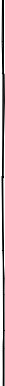
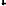
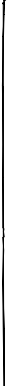

> • 誕生日 cumpleaños <= cumplir （達成する）+ año （年） ¿Cuándo es el cumpleaños de Lupe? (When is Lupe’s birthday?) - Su cumpleaños es el primero de enero. (Her birthday is January 1st.) ※スペイン語の日付は「日＋月」の順で間に”de” を入れる。 • 生年月日 fecha de nacimiento <= fecha (date), nacimiento <= nacer (be born) ¿Cuál es tu fecha de nacimento? (When is your birthdate?) - Es el 13 de noviembre de 1987. (It’s November 13, 1987.) ※スペイン語の日付は「日＋月＋年」の順で間に”de” を入れる。 • 年齢 edad ¿Cuántos años tiene tu abuelo? (How old is your grandpa?) - Tiene 63 años. / Tiene 63. (He is 63 years old.) 誕生日・生年月日・年齢 cumpleaños, fecha de nacimiento, edad


